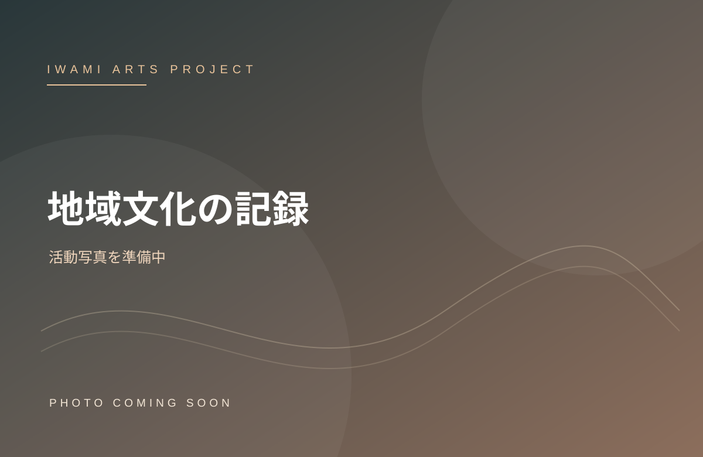
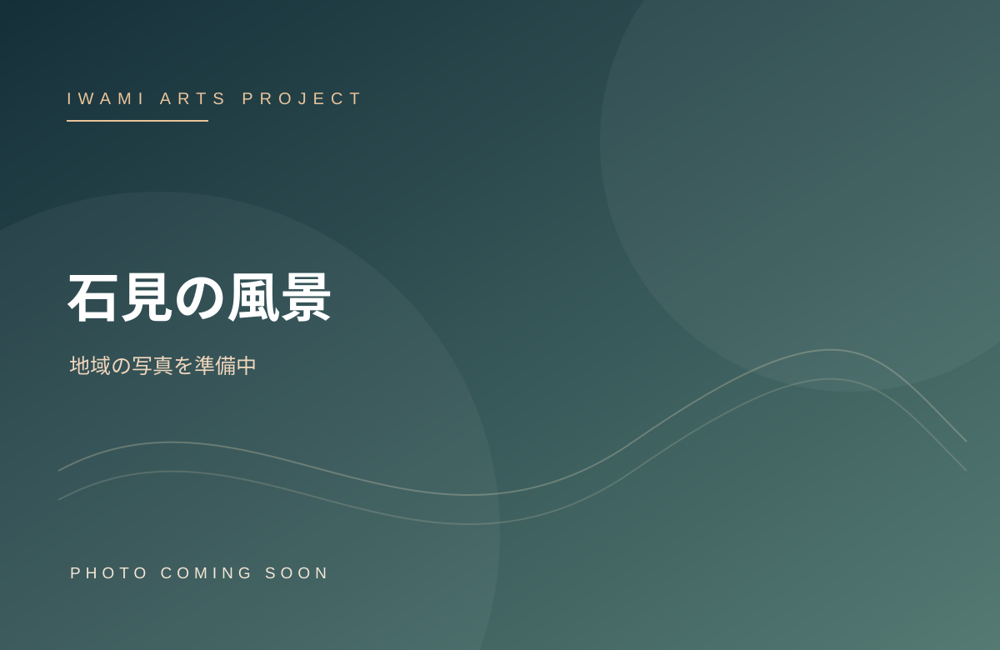

2026年『若草物語』終演記念の集合写真
2026年『若草物語』終演記念の集合写真2026 / AUGUSTミュージカル
ミュージカル
『若草物語』
福田善之作、越光照文演出。戦時下の日本を舞台に、四姉妹の生き方や家族の絆、平和への願いを描きました。プロの舞台スタッフと地域の出演者が約5か月にわたって創作し、全3公演は満席となりました。
舞台映像を見る・購入する ↗WORKS / ARCHIVE
劇場も、旧校舎も、温泉街も。私たちにとっては、すべてが芸術の舞台です。石見の土地と人々から生まれた、活動の記録をご紹介します。
OUR HISTORY / SELECTED ACTIVITIES
PHOTO STORIES / 2021–2026
写真をタップして各事業の紹介ページへ。公演写真と教育活動を分けて掲載しています。


 2026年『若草物語』終演記念の集合写真
2026年『若草物語』終演記念の集合写真福田善之作、越光照文演出。戦時下の日本を舞台に、四姉妹の生き方や家族の絆、平和への願いを描きました。プロの舞台スタッフと地域の出演者が約5か月にわたって創作し、全3公演は満席となりました。
舞台映像を見る・購入する ↗2025年「演劇教室」の写真演技・身体表現・歌唱・舞台美術まで。第一線で活躍する講師陣を地域に迎え、経験者も初心者も学べるプログラムを開催してきました。2026年には鈴木健介さんによる舞台美術ワークショップも実施しました。
2025年の演劇教室の写真を見る ↗
写真準備中 / 実際の活動写真ではありません2022年には現代美術展と演劇ワークショップを開催。石見の身近な素材や文化を芸術表現につなげ、ふだんの生活の中に新しい見方を届ける取り組みを続けています。
過去の活動を読む ↗旧小学校の校舎を舞台に、Ponboksの参加型インスタレーションなどを展示。触れたり動いたりしながら作品と関わることで、幅広い世代にとってアートが身近なものになりました。
活動の歩みを見る ↗
写真準備中 / 実際の公演写真ではありません歴史ある温泉街の古民家を会場に、劇団晴天による『共演者』を上演しました。地域の暮らしに近い場所で舞台と観客が出会う、IWAMI ARTS PROJECTの初期の取り組みです。
これまでの活動を見る ↗FUTURE / INTERNATIONAL
韓国や中国の表現者との交流を通じて、次の世代が国を越えて共同で作品をつくる機会を探っています。日韓共同制作音楽劇『ロミオとジュリエット』は構想段階です。
国際共同制作の構想を見る ↗LET'S CREATE TOGETHER
公演・講座・地域でのコラボレーションなど、ご相談ください。